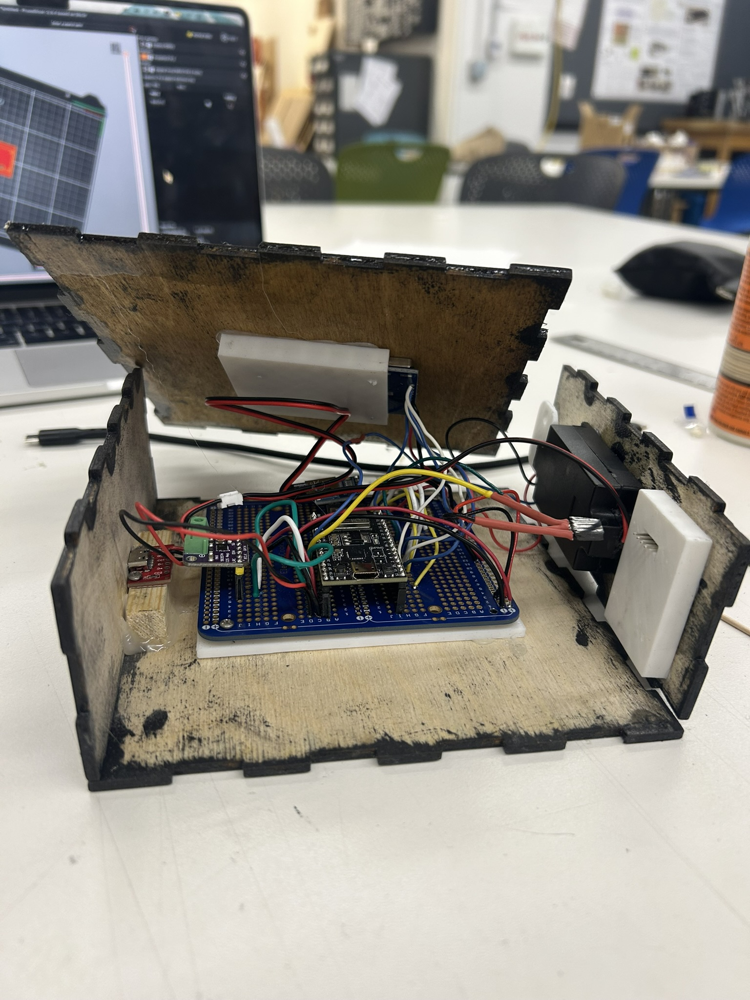
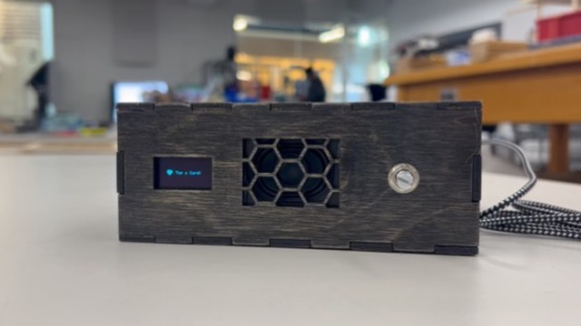

<div class="textcontainer">
<p class="margin"> </p>
<h2>Final Project: The Contactless Audio Messenger</h2>
<video controls autoplay loop muted style="width: 100%; max-width: 600px;">
<source src="IMG_5377.mp4" type="video/mp4">
Your browser does not support the video tag.
</video>
<p class="margin"> </p>
<h4>Project Concept & Evolution</h4>
<p>The <b>Contactless Audio Messenger</b> is an interactive playback system designed to bridge the gap between physical objects and digital memories. By tapping custom RFID tags against the device, users trigger personalized voice recordings stored on a microSD card. I think it's super cool that I created a visual and auditory scrapbook, which is something I love. Friends in the class also said they'd pay like $50 for this? CRAZY! I also discovered RFiD stickers were also a thing that the machine could recognize, so that is also what we're doing. Yay celebrations!.</p>
<p class="margin"> </p>
<h4>System Architecture</h4>
<p>The brain of the project is an <b>ESP32</b>, managing three simultaneous communication protocols (SPI, I2C, and I2S). This complexity required careful pin management and non-blocking C++ logic.</p>
<ul>
<li><b>Input:</b> RC522 RFID Reader (SPI) for identifying unique photo tags.</li>
<li><b>Storage:</b> MicroSD Card (SPI) housing 44.1kHz WAV files.</li>
<li><b>Audio Output:</b> MAX98357A I2S Amplifier driving a high-fidelity speaker.</li>
<li><b>Visual UI:</b> 0.96" OLED (I2C) providing real-time feedback and progress bars.</li>
<li><b>Control:</b> Potentiometer for smoothed, analog volume adjustment.</li>
</ul>
<p class="margin"> </p>
<h4>Technical Specifications & Wiring</h4>
<p>Because the RFID and SD modules share the SPI bus, I implemented <b>SPI Multiplexing</b>. I used dedicated Chip Select (CS) pins to toggle between reading a card and pulling audio data from the SD card.</p>
<table class="table">
<thead>
<tr>
<th>Component</th>
<th>ESP32 Pin</th>
<th>Protocol</th>
</tr>
</thead>
<tbody>
<tr><td>SCK / MOSI / MISO</td><td>GPIO 18 / 23 / 19</td><td>Shared SPI Bus</td></tr>
<tr><td>RFID CS / SD CS</td><td>GPIO 5 / 4</td><td>Chip Selects</td></tr>
<tr><td>I2S (BCLK/LRC/DIN)</td><td>GPIO 26 / 25 / 27</td><td>Digital Audio</td></tr>
<tr><td>OLED (SDA/SCL)</td><td>GPIO 21 / 32</td><td>I2C</td></tr>
<tr><td>Potentiometer</td><td>GPIO 34</td><td>Analog Input</td></tr>
</tbody>
</table>
<p></p></img>
<p class="margin"> </p>
<h4>Fabrication & Aesthetics</h4>
<p></p></img>
<p>The physical enclosure was a labor of love. I wanted a professional, "screw-less" look that felt like a consumer product. I pulled several all-nighters to get the internal layout exactly right. I cut a lot of wood, stained a lot of it and applied a high-gloss finish a screen. So good!! I</p>
<p class="margin"> </p>
<div class="flexrow">
<a id="btn" href="rfid_voice_player3.ino" download>Download the code for the contactless audio messenger!
</a>
</div>
<p class="margin"> </p>
<p>Notable things about the code include that much of it is AI written, as I wasn't sure ezactly how to go about a lot of this, but it has a sleep timer that turns the screen off after 3 minutes of inactivity, and it has a way to pause the audio by tapping the same card on it.</p>
<h4>Reflections & Future Directions</h4>
<p>Reflecting on this project, I'm so proud I took this class and stayed strong and saw it through! I loved watching myself go from entirely incompetent to learning to do stuff with my hands, and I am super excited to continue this love forward in postgrad life. I am so appreciative of all the support and love from the teaching staff, and the project fair was so cool! Everyone is so talented. I would also pay to listen to Bobby talk--Commencement speaker for the Class of '26, anyone? Thank you for all the memories--I had the time of my life.</p>
<p>So sentimental. Thank you for everything! Also, if you're reading this, please leave me a voice memo and I'll add it to my cards! :D</p>
<p class="margin"> </p>